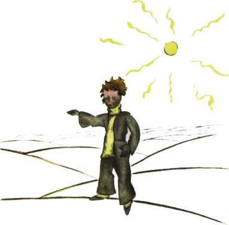
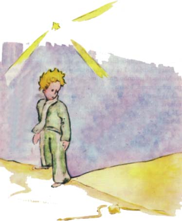

Dospìlí vám ov¹em nebudou vìøit. Myslí si, ¾e zabírají mnoho místa. Pøipadají si dùle¾ití jako baobaby. Poraïte jim tedy, aby se poèítali. Zbo¾òují èíslice, bude se jim to líbit. Ale vy neztrácejte èas takovou ohavnou úlohou. Je to zbyteèné. Pøece mi dùvìøujete.
Kdy¾ byl tedy malý princ na Zemi, byl velice pøekvapen, ¾e nikoho nevidí. U¾ mìl strach, ¾e si popletl planetu, kdy¾ tu nìjaký krou¾ek barvy mìsíce se pohnul v písku.
"Dobrou noc," øekl malý princ jen tak nazdaøbùh.
"Dobrou noc," odpovìdìl had.
"Na kterou planetu jsem to spadl?" zeptal se malý princ.
"Na Zemi, do Afriky," odpovìdìl had.
"Ach! ... A na Zemi nikdo není?"
"Tady je pou¹». A na pou¹tích nikdo není. Zemì je veliká," øekl had. Malý princ si sedl na kámen, pohlédl k obloze a pravil:
"Tak si øíkám, jestli hvìzdy záøí proto, aby ka¾dý mohl jednoho dne najít tu svou. Podívej se na mou planetu. Je právì nad námi... Ale jak daleko!"
"Je krásná," øekl had. "Proè jsi sem pøi¹el?"
"Mám trampoty s jednou kvìtinou," odpovìdìl malý princ.
"Tak?" øekl had.
Odmlèeli se.

"Kde jsou lidé?" zeptal se zase malý princ. "V pou¹ti je ka¾dý trochu osamìlý..."
"Osamìlí jsme i mezi lidmi," namítl had.
Malý princ se na nìj dlouze zadíval.
"Ty jsi podivné zvíøe," øekl mu koneènì, "tenké jako prst..."
"Ale jsem mocnìj¹í ne¾ prst krále," øekl had.
Malý princ se usmál:
"No, pøíli¹ mocný nejsi... Nemá¹ ani no¾ky... Ani cestovat nemù¾e¹..."
"Mohu tì unést dál ne¾ loï," øekl had.
Stoèil se okolo kotníku malého prince jako zlatý náramek.
"Koho se dotknu, vrátím ho zemi, ze které vy¹el," øekl je¹tì. "Ale ty jsi èistý a pøichází¹ z hvìzdy..."
Malý princ neodpovìdìl.
"Je mi tì líto, kdy¾ tì vidím tak slabého na této Zemi ze ¾uly. Mohu ti jednoho dne pomoci, bude-li se ti pøíli¹ stýskat po tvé planetì. Mohu..."
"Ó, já jsem ti dobøe rozumìl," øekl malý princ. "Ale proè mluví¹ stále v hádankách?"
"Já je v¹echny rozlu¹tím," odpovìdìl had.
A umlkli.